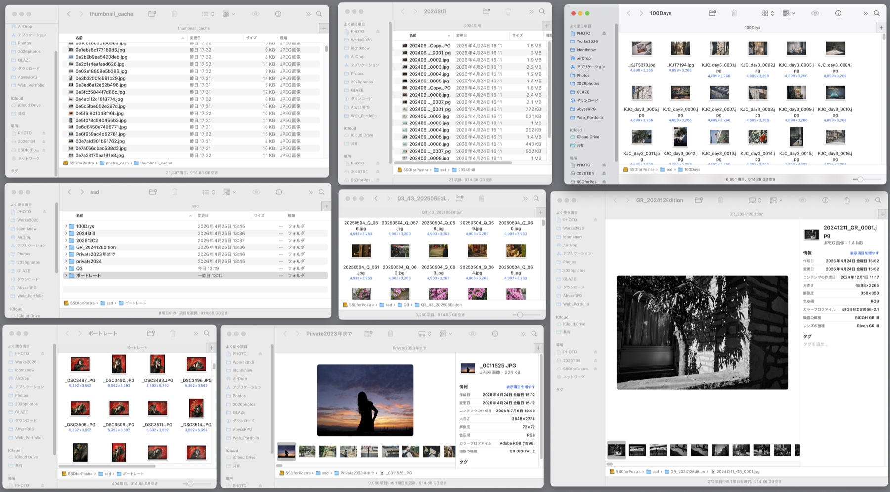

ストレージに眠る 数万枚 の写真から、「あの1枚」や「この組み合わせ」 を。
似た写真を一瞬でまとめ、組写真を組み、編集し、SNS や各種発信に投稿する直前まで——
Postra は「写真再発見」のためのアプリです。
「いつか見返そう」で溜まり続ける写真フォルダ。せっかく撮った瞬間や現像した写真たちが、ただの重いデータになっていく。 Postra は、そこに楽しみを見出すアプリです。
撮影日ごとに放り込まれた JPG・RAW たち。プレビューは遅く、似たようなカットが並んで、どれが本命か思い出せない。気づけば選ぶ前に集中力が切れる。

似た写真は自動でまとめ、キーボードだけで採用・不採用。右側レイアウトパネルに移せば、もう組写真の編集画面です。「選ぶ（選んでもらう） → 組む → 編集する →書き出す」が、ひとつのアプリで完結します。
1枚を選び、クリックすれば、意味が近い写真と見た目が近い写真が瞬時に並びます。
「夕焼け」「笑顔」と打てば、開いているフォルダから引き上げます。
タグ付け不要。初期設定をしてしまえば、次からは写真を読み込むたびに自動で付与されます。
同じ被写体を追いかけた写真は 意味が近い。
別の日に似た構図で撮った一枚は 見た目が近い。
Postra はその二つを別のモデルで見て、すぐに切り替えられます。
Postra は読み込んだ写真ごとに、美的な完成度をスコアにして表示します。
「フォルダ内で上位 15%」が一目で分かるので、ベストショットを見つけるのが早い。
組み写真を作るときは、選んだ 2 枚以上の色味が合っているかも自動で判定。
Postra は読み込み時に、1 枚ずつ ★1.0〜10.0 の美的スコアを付与。
絶対評価ではなく、開いているフォルダ内の相対順位として色分け表示するから、その日のベストショットが浮き上がります。
組み写真を組んだ瞬間には、Lab 色空間で色調の統一感を 3 段階で判定。色の散らかった組を未然に防げます。
右側レイアウトパネルは2つに分割も可能、同じ素材または別の素材で別レイアウトを並行して組むことも。
並べて見比べて、好きな方を書き出す。
SNS 用の 1:1 / 4:5 / 16:9 / 9:16 他、柔軟に対応。
変更もプリセット保存もご自由に。個別写真の書き出しや「見たまんま」レイアウト出力も可能
ドラッグ&ドロップで画像の差し替えは簡単。Z で全体をランダム入れ替え。X で1枚だけランダム入れ替え。
露光・コントラスト・ハイライト・シャドウから、色温度・ティント・彩度・鮮やかさ・トーンカーブ・トーン別カラーバランスまで、すべて非破壊で。主要機種の RAW（ARW · DNG など）は本体で簡易現像も可能。Fuji X-Trans (RAF) は埋込 JPEG をそのまま素材化。本格現像が必要な場合は Capture One 等へ引き渡せます。値はすべてサイドカーに保存され、撮って出しの JPG / RAW はそのまま残ります。
レイアウトを組んだら、レタッチモードでそのまま調整へ。別の写真を選んで Shift V で同じ設定をペースト。JPG レタッチも RAW 簡易現像も、同じ画面で完結。ARW · DNG など主要機種の RAW はスライダー操作でそのまま簡易現像できます。Fuji X-Trans (RAF) は埋込 JPEG モードでセレクト・レイアウトを軽快に進め、本格現像が必要な場合は Capture One や Lightroom に引き渡せます。
処理時間は CPU / GPU と SSD の速度で大きく変わります。下は手元にある2台の実機で 30,000 枚（1 枚あたり 約 1〜5MB）を実測した参考値です。お使いの環境に近いほうを目安にしてください。
初回スキャンが終われば、その先はスクロールもレイアウトも即応します。
条件: 30,000 枚の JPG フォルダ ／ 1 枚あたり 約 1〜5MB（一般的な JPG 撮って出しのサイズ感）／ ローカル処理のみ（外部送信なし）／ AI モデルは初回ダウンロード後の純粋な解析時間。
写真本体とキャッシュは外付け SSD（USB-C 接続 ／ 実測 Read 約 522 MB/s ／ Write 約 482 MB/s）に配置。内蔵 SSD ならサムネイル読み込みはさらに速くなります（AI 解析は CPU / GPU 性能が中心のため変化は小さめ）。
ファイルサイズが大きくなるとサムネイル生成は比例して遅くなりますが、CLIP / DINOv2 の解析時間はほぼ変わりません（モデル内部で固定サイズにリサイズされるため）。
※ CLIP / DINOv2 は途中サンプルからの推算値（M4 Max: CLIP 10,000 枚／分・DINOv2 500 枚／分 ／ M1 Pro: CLIP 5,000 枚／分・DINOv2 220 枚／分 の実測ペースを 30,000 枚に換算）。
Apple Silicon (M1 以上) の Mac に最適化。Metal GPU を活用して AI 推論まですべて端末ローカルで完結します。ネット接続は不要（初期設定とアップデート確認を除く）。
Mac App Store で発売中です。
買い切りです。一度購入したバージョンは、アップデートが止まってもそのまま使い続けられます。メジャーアップデートが今後出た場合（例: 2.0）には優待価格で移行できます。
現在は Mac (Apple Silicon) 専用 です。Windows 版は今後の検討課題としていますが、現時点でリリース時期は未定です。
動きません。本アプリは Apple Silicon（M1 / M2 / M3 / M4 系）専用ビルドで提供しており、Intel Mac ではアプリ自体が起動できませんのでご注意ください。
確認方法: Mac の「このMacについて」を開き、「チップ」または「プロセッサ」欄が Apple M1 / M2 / M3 / M4 等になっていれば動作します。Intel Core i5 / i7 / i9 / Xeon 等になっている場合はご利用いただけません。
Intel Mac への対応予定はありません。
Apple Silicon の Metal GPU で AI 推論を実行するため、M1 系でも軽快に動作します。10,000 枚規模のライブラリで、CLIP のみなら 10 分前後、DINOv2 まで含めると環境により 20〜50 分程度（M4 Max〜M1 Pro 範囲）が目安です（実測値は スピードセクション をご確認ください）。
解析は 初回のみでキャッシュ化され、以降の検索は瞬時です。AI 解析は 一時停止 / 再開 に対応しているので、夜間放置などの運用も可能です。
AI 機能はオプションです。設定画面で「意味検索 (CLIP)」「見た目検索 (DINOv2)」を個別にオン／オフできます。AI を使わなければ、写真ブラウズ・カリング・組写真・書き出しはさらに軽快に動作します。
ARW · DNG など主要機種の RAW は、Postra 本体で簡易現像できます。露光・コントラスト・ハイライト・シャドウ・色温度・ティント・彩度・鮮やかさ・トーンカーブ・トーン別カラーバランスをスライダーで調整し、JPEG として書き出せます。プリセットやユーザー定義スタイルも利用可能で、JPG レタッチと同じ画面で完結します。
Fuji X-Trans (RAF) は現バージョン（v1.0）では RAW 現像が未対応です。ですがカメラ内で現像済みの埋込 JPEG をそのまま素材化し、軽快に閲覧・レイアウト・レタッチが可能です。本格現像が必要な場合は、設定画面で指定した外部現像ソフト（Capture One / Lightroom / RawTherapee 等）へ引き渡せます。
※ 書き出しは JPEG のみ。元の JPG / RAW は一切書き換えません。
併用可能です。むしろ Postra は現時点（v1.0）では JPG を基本としたワークフローを想定しています。Postra は JPG・主要機種の RAW を本体で簡易現像・レタッチして JPEG 書き出しが可能で、Fuji RAF や他機種でも本格的な RAW 現像が必要な場合は、設定画面で指定した外部現像ソフトへ引き渡せます。
セレクト・レイアウト・AI 検索を Postra で進め、採用カットだけ Lightroom や Capture One で仕上げる運用にも適しています。
送られません。類似検索・キーワード検索・レタッチ、他すべての機能が端末のローカルで完結します。
ネットワーク接続は基本的に不要です（AI機能の初期導入やアップデート確認を除く）。
はい、Mac 同士であれば外付け SSD に画像ファイルとキャッシュをまとめて入れることで、複数の Mac 間でサムネイル・プレビュー・AI 解析結果（類似検索キャッシュ）を共有できます。AI 解析を一度走らせれば、別の Mac に SSD を差し替えても再解析不要です。
使い方: SSD に画像とキャッシュ用フォルダを用意し、各 Mac の Postra で「設定 → キャッシュ保存先」を SSD 内のパスに設定してください。
注意点:
機能ごとに短いチュートリアル動画を公開しています。チュートリアル からご覧いただけます（英語版は順次制作中）。
初期状態で思いつくほとんどの機能は詰め込んでいるつもりですが、ブラッシュアップは継続していきます。バグや不具合への対応はもちろん、以下のような新機能の追加も予定しております（時期は未定）。
1. バージョン 1.1 では RAW 現像のブラッシュアップと RAF への対応を強化
2. バージョン 1.1 ではタグ付け機能と XMP メタデータの読み取りを追加
3. バージョン 1.2 では投稿文案の自動生成や XMP 書き出しに対応
4. バージョン 1.3 では組み写真の相性スコアやスマートトリミング提案を追加
当面は Mac App Store のみでの販売です。将来的に直販（Paddle 等）での販売も検討対象としていますが、時期は未定です。
買い切りで、Mac App Store にて発売中です。